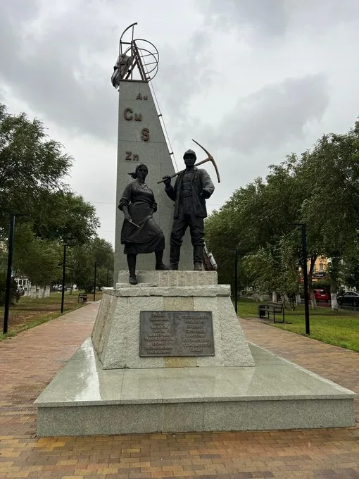
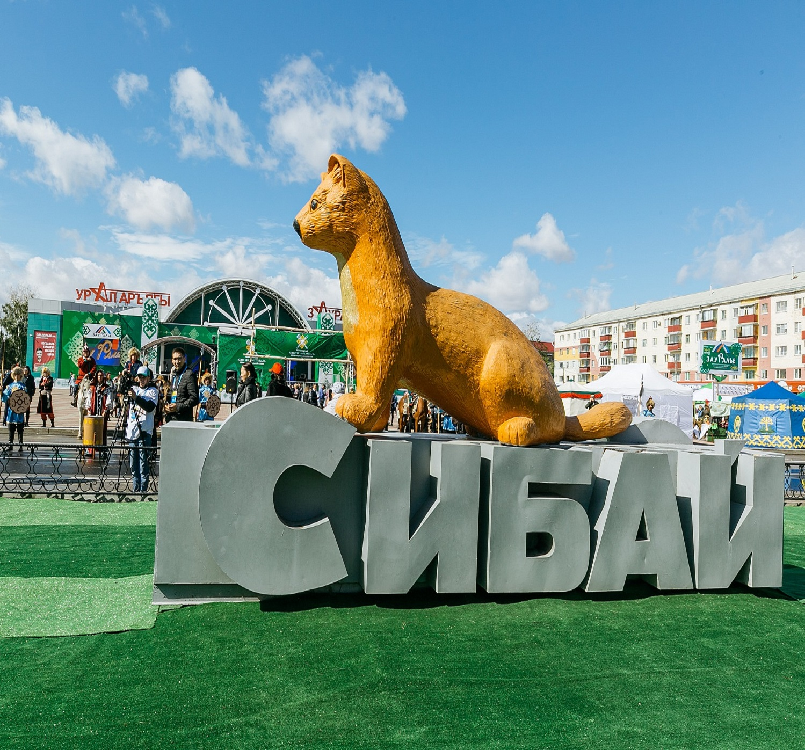
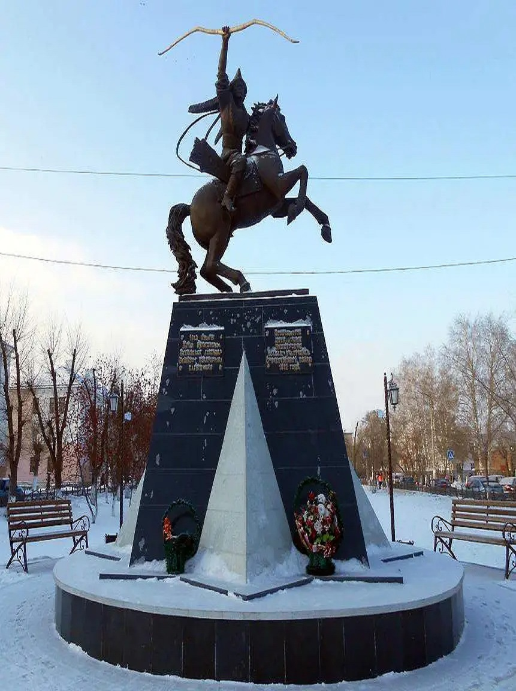

Башкортостан – мой край родной. Моя Родина уникальна и неповторима. Одним из самых красивых уголков республики для меня является Зауралье. Башкирское Зауралье объединяет городской округ город Сибай, муниципальные районы Абзелиловский, Баймакский, Бурзянский, Зианчуринский, Зилаирский, Учалинский, Хайбуллинский районы Республики Башкортостан. |
|---|
Водопад назван именем деревни, расположенной неподалеку, это самый крупный трехкаскадный водопад в Башкортостане. Высота его каскадов в сумме составляет около 17 метров. Весной и осенью живописный водопад полноводен и наиболее величественен. С середины прошлого столетия данная местность объявлена памятником природы. Знаменит водопад залежами ценных пород яшмы и разнообразным растительным миром, отдельные представители которого находятся под охраной. |
|---|
Озеро «Талкас» - памятник природы. 453630, Республика Башкортостан, Баймакский район, д.Исяново. Расположено вдоль западного подножья хребта Ирандык в 30 км к северу от города Баймак. Название происходит от башкирского слова талғын (т.е. спокойно, медленно плещутся волны). Площадь зеркала 3,92 км 2, объем воды 15-16 млн. м 3, максимальная глубина 12 м, при средней глубине 4,5 м. |
|---|
В Баймакском районе тянется с севера на юг хребет Ирендык, это из восточных отрогов Большого Урала. Длина его 135 километров. Самой высокой точкой хребта является гора Куянташ, высота её 987 метров. Хребет Ирендык — очень красивый хребет. Вид стоящей посереди огромной степи горной цепи впечатляет. Особенно в середине лета картина становится контрастной — желтая степь и зеленые склоны хребта, словно полоска оазиса, тянется на многие километры. |
|---|
Город Сибай считают столицей Башкирского Зауралья. Сибай является наиболее крупным населенным пунктом в Зауральском регионе Республики Башкортостан и считается одним из значимых промышленных, культурных, научных и образовательных центров Республики Башкортостан. |
|---|
|  | В начале 20 века Город Сибай стал одним из центров золотодобычи в регионе — из небольшого посёлка охотников и лесорубов быстро превратился в город с 60-тысячным населением.Я надеюсь, что познакомившись с этой землей, вы полюбите эти места и захотите приезжать сюда вновь и вновь. |
 |